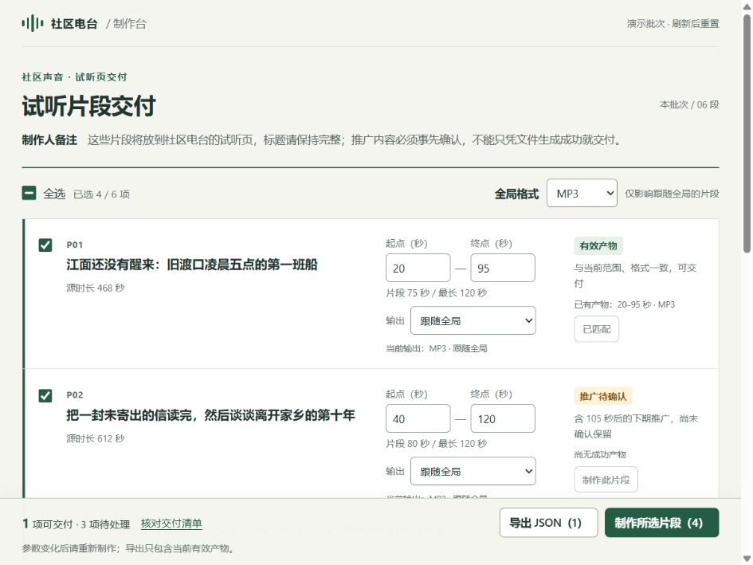
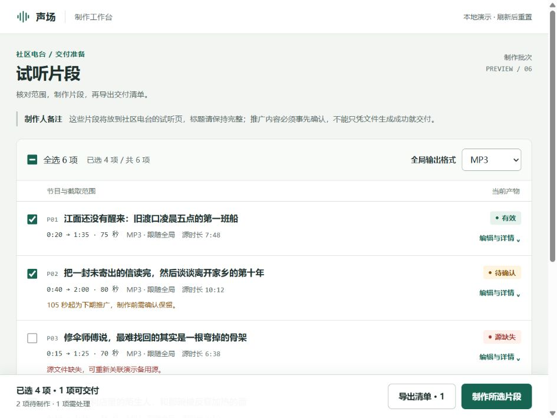

局部界面 · 匿名对照
同一任务、内容与视口下的两组实现。可先比较画面，再打开原型操作。
A：旧版技能 / B：新版技能
任务 1
截图采集视口：960 × 720 CSS px
A旧版技能

该截图尚未生成或无法加载。
请稍后刷新页面。
请稍后刷新页面。
B新版技能

该截图尚未生成或无法加载。
请稍后刷新页面。
请稍后刷新页面。
这里显示的是各视口的一张截图，按当前页面宽度等比呈现，不代表完整页面或全部状态。可打开原尺寸截图查看细节；“打开原型”会在新页显示可操作页面，窗口大小由你的浏览器决定。